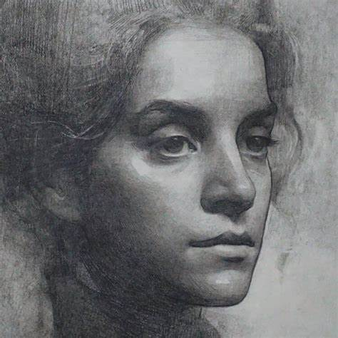
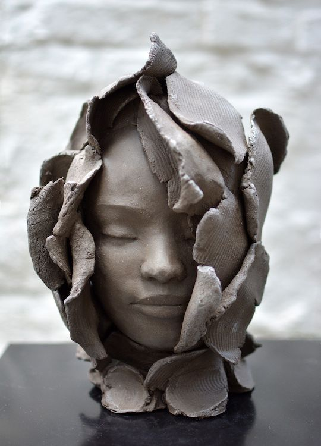
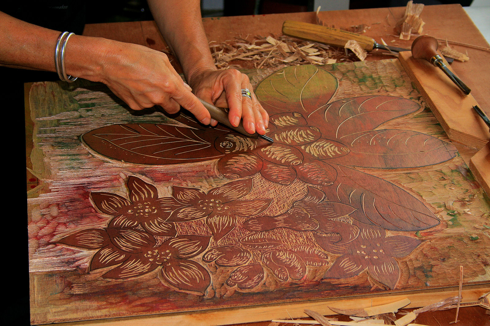
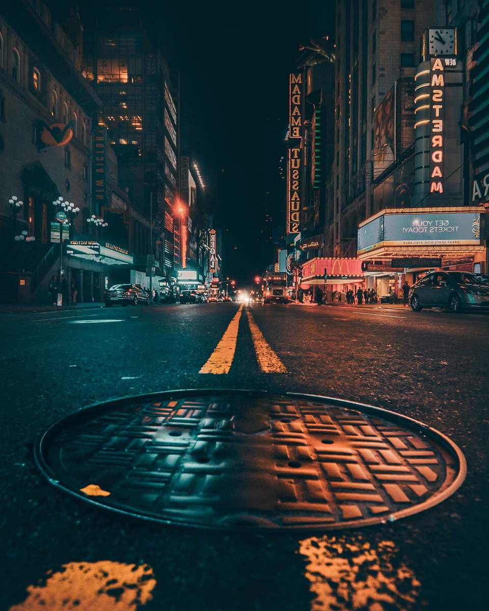

Painting: Creating images on surfaces like canvas or paper using pigments.
Drawing: Using tools like pencils, charcoal, or ink to produce images on surfaces
Sculpture: Shaping materials like stone, metal or wood into three-dimensional forms.
Printmaking: Creating images by printing, typically on paper, from a specially prepare surface
Photography: Capturing images using cameras.